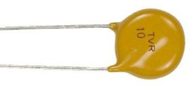

Зарубежные варисторы серии TVR
Варисторы (Varistor) – оксидноцинковые или металлооксидные резисторы, способные резко уменьшать внутреннее сопротивление с тысяч Мом до десятков Ом как только напряжение на них превысит определенную параметрами величину. Вольт-амперная характеристика варистора симметрична, таким образом прибор в состоянии работать в цепях переменного тока.

Рис. 1 - Внешний вид варисторов серии TVR
| Тип варистора | Um=, В | Um~, В | Uп, В | Co, пФ | W, Дж |
| TVR 05 180 | 14 | 11 | 18 | 1600 | 0.4 |
| TVR 07 180 | 3800 | 0.9 | |||
| TVR 10 180 | 9000 | 2.1 | |||
| TVR 14 180 | 22000 | 4.0 | |||
| TVR 20 180 | 44000 | 11.0 | |||
| TVR 05 270 | 22 | 17 | 27 | 1260 | 0.6 |
| TVR 07 270 | 2400 | 1.4 | |||
| TVR 10 270 | 4800 | 3.0 | |||
| TVR 14 270 | 12000 | 6.0 | |||
| TVR 20 270 | 26000 | 18.0 | |||
| TVR 05 391 | 320 | 250 | 390 | 85 | 12 |
| TVR 07 391 | 160 | 25 | |||
| TVR 10 391 | 270 | 60 | |||
| TVR 14 391 | 500 | 100 | |||
| TVR 20 391 | 1000 | 180 | |||
| TVR 05 431 | 350 | 275 | 430 | 80 | 13 |
| TVR 07 431 | 150 | 28 | |||
| TVR 10 431 | 250 | 65 | |||
| TVR 14 431 | 450 | 115 | |||
| TVR 20 431 | 900 | 190 |